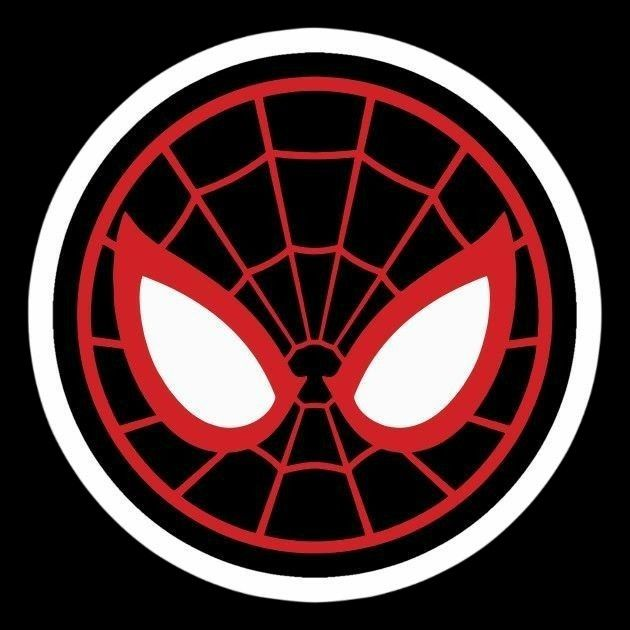
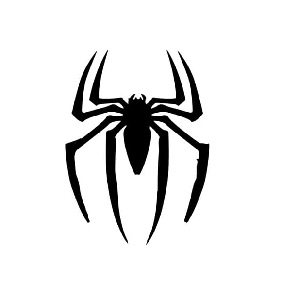

EL PLAN

Miles Morales
Miles Morales
En el corazón del multiverso, cinco arañas se reunieron con un propósito común: detener a La Mancha, cuya capacidad para abrir portales dimensionales lo hacía impredecible y peligroso. Miles Morales trazó el primer esquema del plan: atraer a La Mancha a un universo vacío, sin víctimas colaterales. Peter Parker, con su experiencia, propuso un señuelo para forzarlo a usar su poder y así calcular la frecuencia de sus portales. Spider-Man Noir, siempre en silencio, preparó trampas de energía oscura que interferirían con los túneles. Spider-Gwen analizó la ruta de escape más probable para atrapar al enemigo entre dimensiones. Miguel O'Hara, con la tecnología del 2099, aportó brazaletes que permitirían a cada Spider-persona sincronizarse entre realidades. Unidos por un solo objetivo, sabían que cada error sería catastrófico.
El campo de batalla fue el universo 928-Δ, una dimensión sin vida, abandonada tras una implosión temporal. La Mancha llegó sin sospechar que estaba rodeado. Miles abrió fuego con ráfagas bioeléctricas, desviando su atención. Peter usó su astucia para lanzarse desde un edificio roto y disparar telarañas que fijaron uno de los portales en una sola dirección. Gwen, coordinando desde el aire, marcaba las zonas seguras. Noir, desde la sombra, activó las trampas, que causaron una interferencia brutal en la habilidad del enemigo. Miguel, calculando con precisión cuántica, selló uno de los túneles con una ráfaga inversa. Pero La Mancha reaccionó con furia: el espacio comenzó a colapsar alrededor de ellos, y el grupo se vio forzado a improvisar.
En el clímax del combate, cuando parecía que todo estaba perdido, Miles saltó hacia el núcleo del portal que La Mancha intentaba abrir. Canalizó toda su energía en una explosión de veneno, cerrando la brecha antes de ser absorbido. Peter lo atrapó en el aire, salvándolo de caer al vacío. Gwen y Noir sujetaron al villano, mientras Miguel finalmente instaló un dispositivo de encierro dimensional. Con un destello blanco, La Mancha fue sellado en una prisión sin tiempo ni espacio. Exhaustos pero victoriosos, los cinco héroes sabían que la amenaza podía volver algún día. Pero mientras se mantuvieran unidos, el multiverso tendría su red de protección.